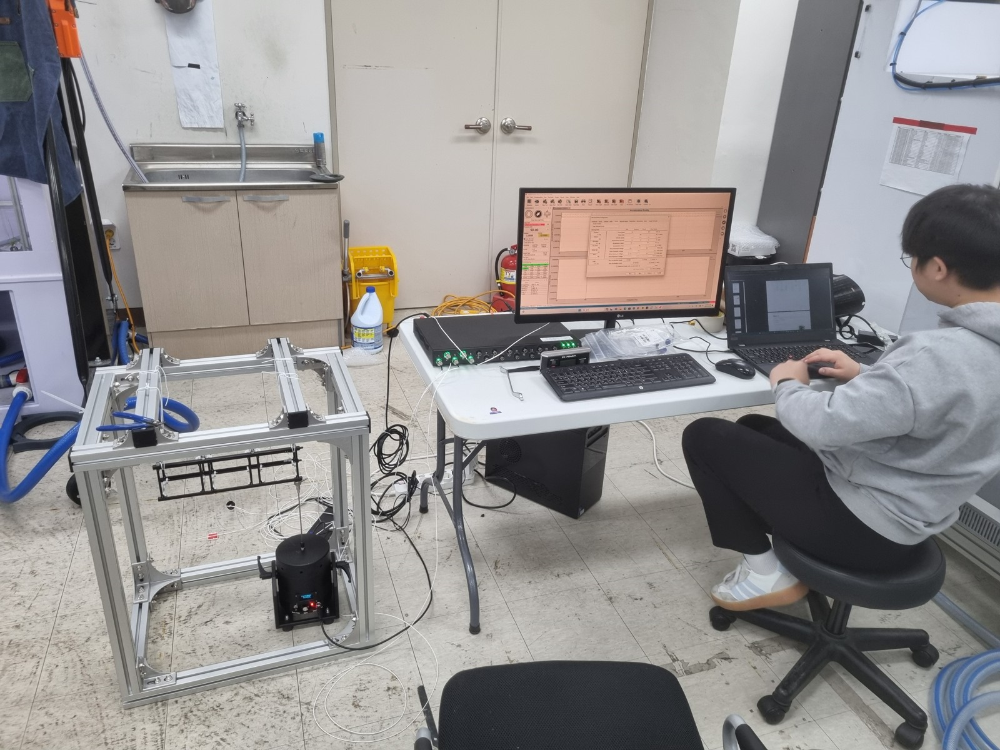
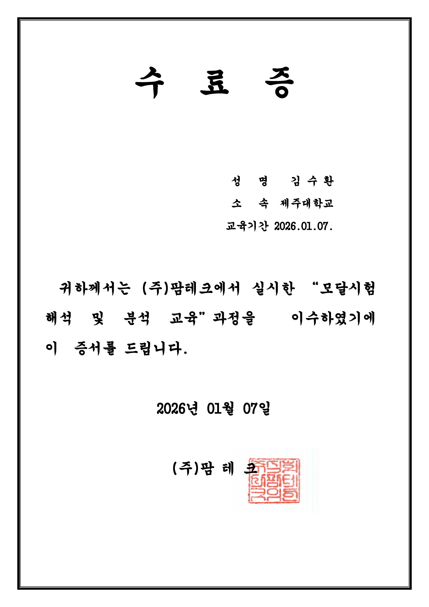
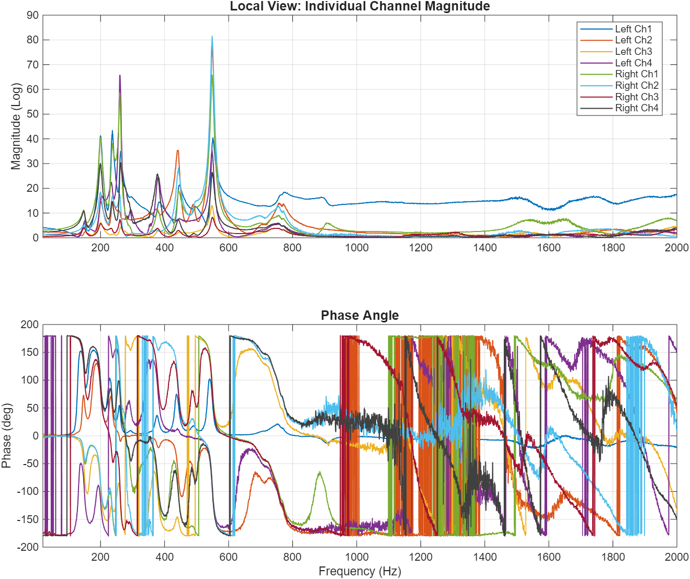
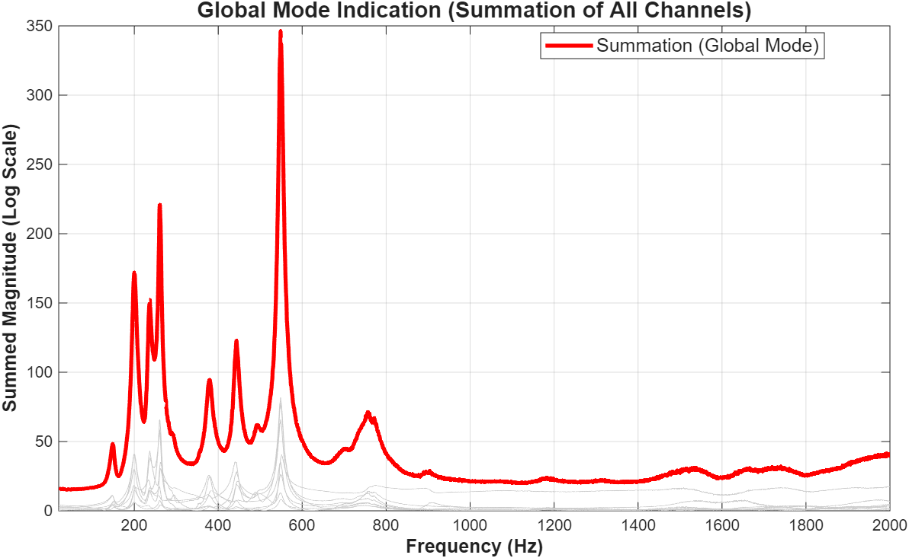

발사체 상승 과정에서 넓은 주파수 대역의 동적 하중이 구조체에 전달됩니다.
MODAL TEST · FRF · MATLAB
발사 진동의 공진 위험을 모달시험으로 확인하다
발사 중 진동과 구조체의 고유진동수가 겹치면 공진으로 응답이 커질 수 있습니다. 3U(3-Unit) 큐브위성의 고유진동수와 감쇠비, 모드 형상을 확인하기 위해 가진 시험 환경을 구성하고 FRF(Frequency Response Function) 계측부터 MATLAB 분석·시각화까지 수행했습니다.
- 목적
- 발사 진동 공진 위험 확인
- 담당
- 시험 환경 구축·계측·분석
- 계측
- 가진기·힘 센서·8채널 가속도계
- 분석
- 주파수응답·모드 식별
왜 시험했는가
발사체가 만드는 진동 대역과 위성 구조체의 고유진동수가 겹치면 공진으로 응답이 증폭되어 체결부와 탑재 부품에 손상이 생길 수 있습니다. 따라서 설계 단계에서 구조체 고유의 동특성을 먼저 확인해야 했습니다.
발사 환경과 큐브위성 구조시험 선행연구를 직접 조사하고 발표자료로 정리했습니다. Ariane-5 탑재 기준의 1차 고유진동수 요구조건과 Vega-C의 20~2000 Hz 랜덤 진동 대역을 검토한 결과, 단순히 구조물이 버티는지만 보는 것이 아니라 고유진동수, 감쇠비와 실제 변형 형태인 모드 형상을 함께 식별해야 한다고 판단했습니다.
두 주파수가 겹치면 공진으로 응답이 커져 체결부와 탑재 부품의 손상 위험이 높아집니다.
가진 시험으로 고유진동수, 감쇠비와 모드 형상을 확인해 설계 판단 근거를 만듭니다.
선행연구의 한계유한요소해석과 1차 고유진동수 확인에 집중
→이번 시험의 범위실험으로 고유진동수·감쇠비·모드 형상까지 식별
담당 범위와 시험 구성
지도교수 변경 이후 과제가 새로 시작되던 시점에 3명이 함께 참여했습니다. 한 명은 프레임 구매와 번지 로프 조사, 다른 한 명은 3D 프린팅 재료 조사와 구조체 모델링·출력을 맡았습니다. 저는 연구 배경과 시험 방법을 정리한 발표자료 작성부터 시험 조건 설정, 가진 시험 환경 구축, 계측, 시험 수행, MATLAB 분석과 시각화까지 담당했습니다. 가진기와 구조체를 연결하는 시험 지그는 팀원들과 함께 설계했습니다.
먼저 지지대의 진동이 구조체 고유 모드에 섞이지 않도록 번지 로프로 매달아 자유 경계조건을 근사했습니다. 가진기와 구조체 사이에는 힘 센서와 스팅어를 배치해 실제 입력력을 측정하고, 구조체 8개 지점에는 가속도계를 부착해 위치별 응답을 동시에 수집했습니다. 특정 주파수만 훑는 방식보다 전체 관심 대역을 충분히 자극할 수 있도록 최종 시험에는 20~2000 Hz 백색잡음 랜덤 가진을 적용했습니다.
외부 지지 구조의 모드 전달을 줄이고 구조체 고유의 탄성 모드를 관찰했습니다.
관심 주파수 전 구간에 충분한 가진 시간을 확보하고 반복 가능한 입력을 적용했습니다.


힘과 응답에서
모드 형상까지
시험 결과가 구조설계 판단으로 이어지도록, 계측부터 모드 형상 시각화까지의 분석 절차를 직접 구성했습니다.
- 입력과 응답 계측힘 센서로 가진기의 실제 입력력을, 8개 가속도계로 구조체 각 지점의 응답을 동시에 측정했습니다.
- 주파수응답함수 산출진동 제어 시스템과 VibrationVIEW에서 평균화, 윈도우 처리와 FFT(Fast Fourier Transform)를 수행하고, 주파수별 가속도 응답을 힘 입력으로 나눈 FRF를 얻었습니다.
- 모드 후보 식별한 센서가 진동하지 않는 절점에 놓일 가능성을 고려해 단일 채널에 의존하지 않고, 8채널 FRF와 Coherence 및 전체 응답 합을 함께 비교했습니다.
- 고유진동수와 감쇠비 추정서로 겹친 공진 응답을 분리하기 위해 관심 주파수 구간을 정한 뒤 Peak Picking과 LSCE(Least-Squares Complex Exponential) 결과를 교차 검토했습니다.
- 모드 형상 재구성FRF 크기와 위상으로 복소수 응답을 만들고 센서 위치에 대응시킨 뒤, 3차 스플라인 보간을 적용해 굽힘과 비틀림 거동을 3차원 애니메이션으로 시각화했습니다.
분석 환경을 다시 만들다
연구실에 보관된 것으로 알았던 상용 분석 소프트웨어의 라이선스 키가 유실되어 복구 방법을 찾는 동안 일정이 지체됐습니다. 상용 도구가 있어야만 분석할 수 있다는 전제를 다시 검토하고, MATLAB과 상용 도구의 결과를 비교한 논문을 근거로 지도교수님과 MATLAB 전환을 협의했습니다.
모달시험 경험을 보완하기 위해 장비 업체 교육에도 직접 참여했습니다. 이후 계측 시스템이 산출한 주파수별 FRF 크기와 위상을 MATLAB에서 복소수 응답으로 재구성하고, 모든 채널을 함께 비교하는 분석 절차를 만들었습니다.

분석 결과
센서가 진동하지 않는 절점에 놓일 가능성을 고려해 8개 채널의 FRF를 함께 비교하고, 전체 응답에서 공통으로 나타나는 모드 후보를 찾았습니다. Peak Picking과 LSCE 결과를 교차 검토해 고유진동수와 감쇠비를 추정한 뒤, 센서 위치에 대응시켜 3차원 모드 형상과 애니메이션으로 시각화했습니다.

